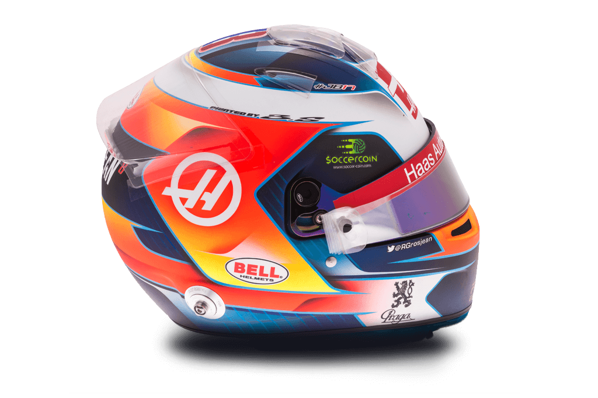

8
Romain Grosjean

| Team | Haas |
| Country | France |
| Podiums | 10 |
| Points | 381 |
| Grands Prix entered | 147 |
| World Championships | N/A |
| Highest race finish | 2 (x2) |
| Highest grid position | 2 |
| Date of birth | 17/04/1986 |
| Place of birth | Geneva, Switzerland |
Biography
High-speed haute cuisine is on the menu in the Grosjean household, where head chef Romain is also a racing star.
Quick and with a natural feel for braking and balance, Grosjean has the right ingredients to cook up a storm on track. Tussling and hustling at the front of the pack, the French racer claimed a series of impressive podiums for Renault before moving to spearhead the Haas team.
Like the best chefs, the Geneva-born driver occasionally breaks a few eggs. Renault handed Grosjean his debut halfway through the 2009 season, but a mix of inexperience and enthusiasm saw him move back to the subs bench before making his F1 return in 2012. A one-race ban after triggering a pile-up in Spa seemed to be the final arc of the learning curve for Grosjean.
A more mature Grosjean remains enthusiastic and expansive. A father to a growing brood and now a cookbook author, it seems he also has the ingredients for a happy life both in the Formula 1 paddock and away from the cauldron of F1 competition.